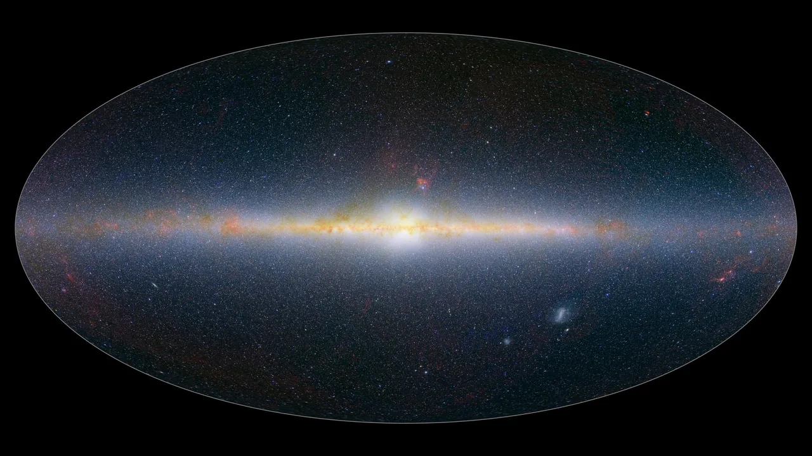
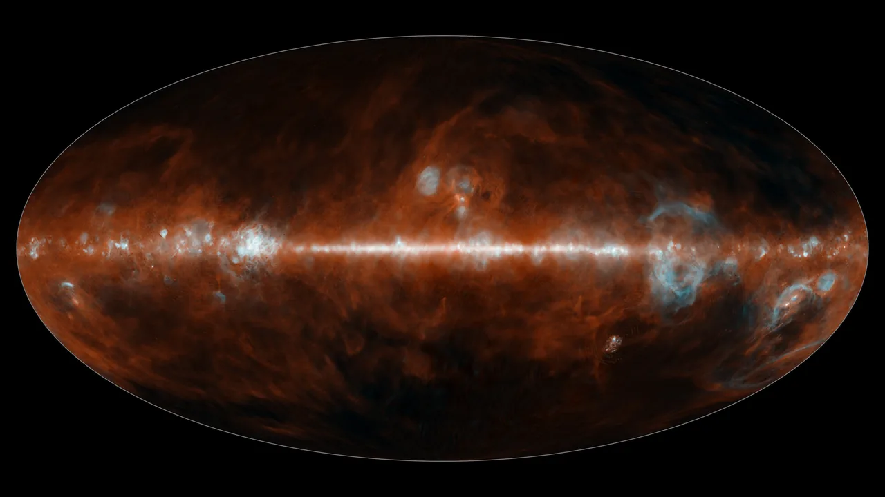
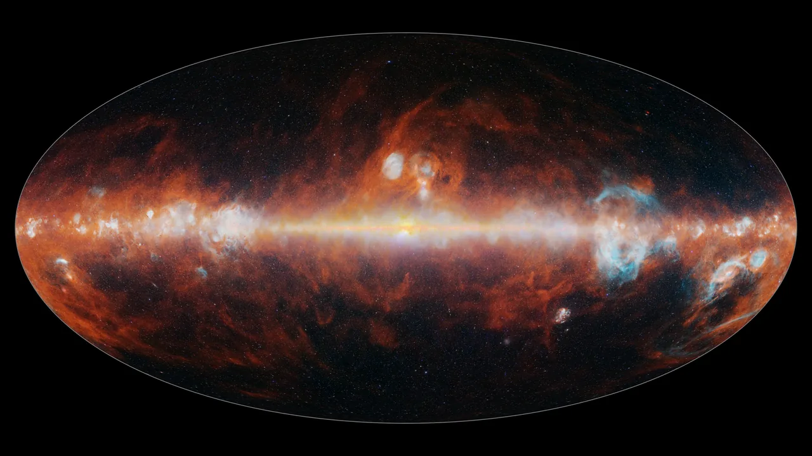

SPHEREx is NASA’s infrared space telescope that photographs the whole sky in 102 colours. Every six months, with no gaps.
A spectroscopic telescope for the whole sky.
It was launched on 11 March 2025. It orbits at an altitude of about 700 km, passing over Earth’s north and south poles, and sweeps the sky in strips to photograph the whole sky once every six months.
11 Mar 2025
Launch
~700 km
Orbit altitude
6 months
One whole-sky pass
It set off with three questions.
The first moment of the universeWith a 3D map of hundreds of millions of galaxies, it looks for traces of the rapid expansion of the universe just after the Big Bang.
How galaxies got hereIt gathers the light given off by all the galaxies in the universe to trace back how brightly galaxies shone in each era.
The ingredients of lifeIt looks for water, carbon dioxide and carbon monoxide ice in the cold clouds of our Galaxy.
A cold eye inside three shields.
Three cone-shaped shields block the heat of the Sun and Earth. Inside them, the 20 cm telescope cools to around −210 °C without a cooler, so it can gather even very faint infrared light.
Now turn it yourself.
Drag to turn it, and open the shields to look inside. Press Full view to move it freely across the whole screen.
This is a reference model rebuilt from public material. It is not a flight design model supplied by NASA.
Preparing the 3D model
Drag to turn · ⌘ or Ctrl + scroll to zoomDrag to turn · scroll to zoom · right button to move · Esc to close
It starts where the eye stops. The human eye sees light only from 0.38–0.75 µm. SPHEREx photographs from just beyond that up to 5 µm, split into 102 colours.
Measure how bright an object is in each colour, join the points, and you get a spectrum. From the shape of the spectrum we read the distance to a galaxy and ingredients such as ice and dust.
Same sky, different light. On the left is the whole sky as Gaia saw it in visible light; on the right, as SPHEREx saw it in infrared. Slide the handle in the middle.



Visible · GaiaInfrared · SPHEREx
‹›
Visible: ESA/Gaia/DPAC, Gaia EDR3 sky colour map (CC BY-SA 3.0 IGO). To line it up with the SPHEREx map we changed its Hammer–Aitoff projection to a Mollweide projection, and we publish the changed image under the same terms. Infrared: NASA/JPL-Caltech, SPHEREx all-sky map (2025). Both maps are in galactic coordinates, with the centre of our Galaxy in the middle.
Where a small question becomes citizen science
SPHEREx for Everyone is an app that makes this data readable for anyone. First learn the basics, then find objects in the sky, and check for yourself what has changed in real observations.
Measured values are kept separate from model estimates, and you can check the sources and quality flags alongside them.
New here? Go in this order
1
Tutorial
Famous scientists take you through the brightness, distance and colour of stars, one step at a time.
2
Planetarium
Find objects among the constellations and see basic details such as distance and magnitude.
3
Armchair Astronomer
Blink the same object across dates to compare it, and check for changes in 3D and in its spectrum.
4
Record a discovery
Save the changes you find together with the evidence. Every discovery is treated as a candidate that needs checking.